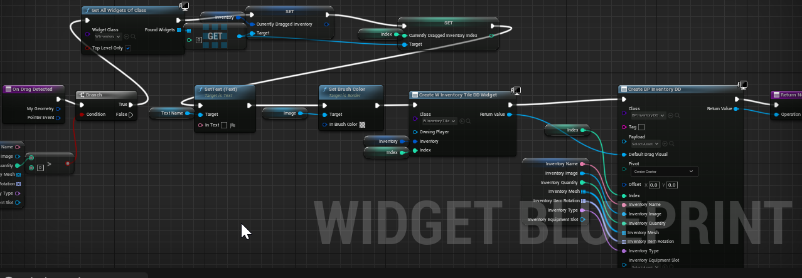

Top Down Shooter Project
| Project Type | 2 People Project |
| Software Used | Unreal Engine 5 |
| Languages Used | C++ / Blueprints |
| Primary Role(s) | Programmer |
The project was done as a collaboration with a graphic artist. For source control we used Github which I learned a lot about thanks to this project. The following sections contain snippets of code and blueprints but not all of it. If you want to check out all of it you can do so here.
Player movement is done to be responsive and dynamic to precisely react to player's inputs. That allows player to manuever around the level and hit the enemies while dodging their attacks.
The following code snippet shows how I managed to make player move horizontal. The vertical movement works the same but with different axis.
void AMyPlayer::MoveHorizontal(float horizontal)
{
if (currentDashTime <= 0.0f) {
if (horizontal > 0) {
madeSoundTimerStep = 0.25f;
if (currentPlayerMovementSpeedX > 0) {
currentPlayerMovementSpeedX = 0;
}
if (currentPlayerMovementSpeedX - increasePlayerMoveSpeed >= -maxPlayerMoveSpeed) {
currentPlayerMovementSpeedX -= increasePlayerMoveSpeed;
}
else {
currentPlayerMovementSpeedX = -maxPlayerMoveSpeed;
}
}
if (horizontal < 0) {
madeSoundTimerStep = 0.25f;
if (currentPlayerMovementSpeedX < 0) {
currentPlayerMovementSpeedX = 0;
}
if (currentPlayerMovementSpeedX + increasePlayerMoveSpeed <= maxPlayerMoveSpeed) {
currentPlayerMovementSpeedX += increasePlayerMoveSpeed;
}
else {
currentPlayerMovementSpeedX = maxPlayerMoveSpeed;
}
}
if (horizontal == 0) {
if (currentPlayerMovementSpeedX > 0) {
if (currentPlayerMovementSpeedX - decreasePlayerMoveSpeed > 0) {
currentPlayerMovementSpeedX -= decreasePlayerMoveSpeed;
}
else {
currentPlayerMovementSpeedX = 0;
}
}
if (currentPlayerMovementSpeedX < 0) {
if (currentPlayerMovementSpeedX + decreasePlayerMoveSpeed < 0) {
currentPlayerMovementSpeedX += decreasePlayerMoveSpeed;
}
else {
currentPlayerMovementSpeedX = 0;
}
}
}
if (playerSkeletalMesh) {
AddMovementInput(FVector(currentPlayerMovementSpeedX, 0, 0), 1);
}
}
moveDirectionX = -horizontal;
}
The following code shows how player model is rotated to look at the mouse cursor. This is important because game mechanics like parry and dash are based on the player rotation.
void AMyPlayer::RotatePlayerToMousePosition() {
FVector mousePosition;
FVector mouseDirection;
FVector mousePositionDeprojected;
FVector mouseDirectionDeprojected;
FHitResult hit;
if (myPlayerController->GetHitResultUnderCursor(ECC_Visibility, true, hit)) {
mousePosition = hit.Location;
}
if (playerSkeletalMesh) {
FVector direction = mousePosition - (cameraAttach->GetComponentLocation() - playerSkeletalMesh->GetComponentLocation());
FRotator newRotation = UKismetMathLibrary::FindLookAtRotation(playerSkeletalMesh->GetComponentLocation(), direction);
//decreasing the Y rotation by 90 so the player looks straight at the mouse position
newRotation = newRotation - FRotator(0, 90, 0);
newRotation = FRotator(0, newRotation.Yaw, 0);
playerSkeletalMesh->SetWorldRotation(newRotation);
}
}
The following code shows how player controller is set up so everything functions properly.
void AMyPlayer::SetupPlayerController() {
// gets reference to the first player controller so we can set things up
myPlayerController = UGameplayStatics::GetPlayerController(GetWorld(), 0);
//show cursor so player can aim and shoot
myPlayerController->bShowMouseCursor = true;
// enable all of mouse events
myPlayerController->bEnableClickEvents = true;
myPlayerController->bEnableMouseOverEvents = true;
// reference to UUserWidget created from cursorWidgetTemplete
// this UUserWidget is used as default game cursor
UUserWidget* cursorWidget = CreateWidget<UUserWidget>(GetGameInstance(), cursorWidgetTemplete);
// sets the default cursor to the cursor we created
myPlayerController->SetMouseCursorWidget(EMouseCursor::Default, cursorWidget);
// makes sure the mouse input works the same way when cursor is shown/not shown
UWidgetBlueprintLibrary::SetInputMode_GameAndUIEx(myPlayerController, cursorWidget, EMouseLockMode::LockAlways, false);
}
The following code snippet shows how player dash is implemented.
void AMyPlayer::PlayerDash() {
if (currentDelayBetweenDashes <= 0) {
currentDashTime = maxDashTime;
currentDelayBetweenDashes = maxDelayBetweenDashes;
if (moveDirectionX != 0 || moveDirectionY != 0) {
dashDirection = FVector(moveDirectionX, moveDirectionY, 0);
dashDirection.Normalize(1.0f);
}
if (moveDirectionX == 0 && moveDirectionY == 0) {
dashDirection = (cursorStaticMesh->GetRightVector()) * 1000;
dashDirection.Normalize(1.0f);
}
}
}
Camera system is made to allow player to check the upcoming challenges awaiting him around the level and be precise enough when fighting enemies.
The following code snippet shows how camera functions. Camera should free view when player holds the right mouse button which allows him to look around the level. There is a limit to how far player can look with the camera though.
if (shouldFreeView) {
float mouseX, mouseY;
myPlayerController->GetMousePosition(mouseX, mouseY);
if (mouseX / viewportSize.X > 0.8f || mouseX / viewportSize.X < 0.2f || mouseY / viewportSize.Y > 0.8f || mouseY / viewportSize.Y < 0.2f) {
cameraFollowPosition.Y -= cameraSpeed * (mouseY / viewportSize.Y - 0.5f);
}
if (FVector::Dist(playerSkeletalMesh->GetComponentLocation(), cameraFollowPosition) > maxCameraDistance) {
cameraFollowPosition = lastCameraCorrectPos;
}
else {
lastCameraCorrectPos = cameraFollowPosition;
}
cameraAttach->SetWorldLocation(cameraFollowPosition);
}
else {
cameraFollowPosition = GetActorLocation();
cameraAttach->SetWorldLocation(GetActorLocation());
}
The special thing about the shooting system is that player must bounce his projectiles using the walls for the projectiles to be able to kill enemies. This forces player so position so that he can bounce the projectiles to hit the enemies while simultaneously dodging from enemy's attacks.
The following code snippet shows what happens when player decides to press the fire button and shoot the projectile.
void AMyPlayer::LeftClickFunction()
{
FHitResult hit;
//player can only shoot if there isn't any other projectile spawned
if (currentProjectile == NULL) {
madeSoundTimerShoot = 0.25f;
//check if player clicked somewhere on the map
if (myPlayerController->GetHitResultUnderCursor(ECollisionChannel::ECC_Visibility, false, hit))
{
if (FVector::Dist2D(hit.ImpactPoint, playerSkeletalMesh->GetComponentLocation()) < 40) {
return;
}
//else spawn the projectile
else
{
FActorSpawnParameters parameters;
parameters.Owner = this;
FRotator rotator = FRotator(0, 0, 0);
FCollisionQueryParams collisionParameters;
//get projectile spawn position so we can spawn the projectile there
FVector spawnPos = FVector(projectileSpawn->GetComponentLocation().X, projectileSpawn->GetComponentLocation().Y, GetActorLocation().Z);
FVector positionToGo;
positionToGo = (cursorStaticMesh->GetRightVector()) * 1000;
positionToGo = FVector(positionToGo.X, positionToGo.Y, projectileSpawn->GetComponentLocation().Z);
AMyProjectile* spawned = GetWorld()->SpawnActor<AMyProjectile>(projectileSpawnObject, spawnPos, rotator, parameters);
currentProjectile = spawned;
//normalize the vector so the projectile speed isn't affected by how far player clicked
positionToGo.Normalize(1.0f);
//send the direction information to projectile
spawned->positionToGoTo = positionToGo;
spawned->startPosition = projectileSpawn->GetRelativeLocation();
spawned->playerObject = this;
}
}
else {
FActorSpawnParameters parameters;
parameters.Owner = this;
FRotator rotator = FRotator(0, 0, 0);
FCollisionQueryParams collisionParameters;
//get projectile spawn position so we can spawn the projectile there
FVector spawnPos = projectileSpawn->GetComponentLocation();
FVector positionToGo;
positionToGo = (cursorStaticMesh->GetRightVector()) * 1000;
positionToGo = FVector(positionToGo.X, positionToGo.Y, projectileSpawn->GetComponentLocation().Z);
AMyProjectile* spawned = GetWorld()->SpawnActor<AMyProjectile>(projectileSpawnObject, spawnPos, rotator, parameters);
currentProjectile = spawned;
//normalize the vector so the projectile speed isn't affected by where player clicked
positionToGo.Normalize(1.0f);
//send the direction information to projectile
spawned->positionToGoTo = positionToGo;
spawned->startPosition = projectileSpawn->GetRelativeLocation();
spawned->playerObject = this;
}
}
}
The following code snippet shows what happens when player decides to press the parry button.
void AMyPlayer::PlayerParry() {
//disallows player from spamming the parry
if (currentDelayBetweenParry <= 0) {
currentDelayBetweenParry = maxDelayBetweenParry;
currentParryTime = parryDuration;
}
}
The following code snippet shows what happens when player is parrying and what happens when the parrying stops.
if (currentParryTime > 0.0f) {
parryShield->SetWorldLocation(projectileSpawn->GetComponentLocation() - FVector(0, 0, 0));
parryShield->SetWorldRotation(FRotator(playerSkeletalMesh->GetComponentRotation().Pitch, playerSkeletalMesh->GetComponentRotation().Yaw, 0));
parryShield->SetVisibility(true);
currentParryTime -= DeltaTime;
}
else {
parryShield->SetWorldLocation(projectileSpawn->GetComponentLocation() - FVector(0, 0, 0));
parryShield->SetWorldRotation(FRotator(playerSkeletalMesh->GetComponentRotation().Pitch, playerSkeletalMesh->GetComponentRotation().Yaw, 0));
parryShield->SetVisibility(false);
}
The enemy characters are obstacles player has to overcome in order to finish the quest. They can be killed or kill the player.
The following code snippet shows how enemy facing the player and his movement speed dependent on situation are handled.
if (myCont != nullptr) {
if (myCont->chasingPlayer || myCont->isAttacking) {
if (player != nullptr) {
//when enemy runs after player or is attacking him he should be always facing the player
FRotator lookRotation = UKismetMathLibrary::FindLookAtRotation(GetActorLocation(), player->playerSkeletalMesh->GetComponentLocation() + FVector(0, 0, 125));
SetActorRotation(lookRotation, ETeleportType::TeleportPhysics);
//between attacks enemy steers around the player
//when steering enemy is slower
if (myCont->steeringPlayer) {
if (movementComponent != nullptr) {
movementComponent->MaxWalkSpeed = steerMoveSpeed;
}
else {
movementComponent = GetCharacterMovement();
}
}
//if he is not steering he is faster so he can chase and attack player
else {
if (movementComponent != nullptr) {
movementComponent->MaxWalkSpeed = runMoveSpeed;
}
else {
movementComponent = GetCharacterMovement();
}
}
}
}
}
This following code snippet shows the enemy's health bar rotates to be always facing the player camera.
if (enemyHealthWidget != nullptr) {
if (player != nullptr) {
FVector playerLocation = player->cameraAttach->GetComponentLocation();
if (FVector::Distance(GetActorLocation(), playerLocation) <= myCont->distanceToSeePlayerAt + 500.0f) {
if (enemyHealthWidgetComponent != nullptr) {
//makes sure the enemy health bar is always rotated to be directly looking at the player camera
FRotator newRot = UKismetMathLibrary::FindLookAtRotation(enemyHealthWidgetComponent->GetComponentLocation(), playerLocation);
enemyHealthWidgetComponent->SetWorldRotation(newRot);
//scales the health bar to reflect current health state
enemyHealthWidget->ScaleHealthImage(maxHealth, currentHealth);
}
}
}
}
This code snippet shows what happens when the enemy's health falls down to zero.
if (currentHealth <= 0.0f) {
//death animation state starts playing
isDead = true;
//makes sure that dead enemies can't body block player before they are removed
GetCapsuleComponent()->SetCapsuleRadius(0.0f);
if (Cast<AMyEnemyCorpseCharacter>(player->currentlyLockedOnEnemy) == this) {
//if player was locked on to this enemy it tries to lock on to another one
player->LockToDifferentEnemyAfterKill();
}
//sets timer before enemy is removed
if (GetWorldTimerManager().IsTimerActive(dieTimerHandle) == false) {
GetWorld()->GetTimerManager().SetTimer(dieTimerHandle, this, &AMyEnemyCorpseCharacter::Die, timeBeforeDestroy, false);
}
}
The user interface contains player health and stamina bars, inventory and ESC menu. For the UI I like to use Blueprints because they make creating UI way simpler process. But the basic UI can be done with C++ just fine.
The player health bar shows player how much health he has remaining.
void UMyPlayerHealthUserWidget::NativeTick(const FGeometry& MyGeometry, float InDeltaTime) {
if (VerticalBox_58) {
UCanvasPanelSlot* slot = Cast<UCanvasPanelSlot>(VerticalBox_58->Slot);
if (slot) {
if (player) {
//scales the health bar to reflect the state of the current player health
slot->SetSize(FVector2D((player->currentPlayerHealth * 500) / player->playerMaxHealth, 15));
}
}
}
if (VerticalBox_76) {
//the slot with the health bar showing how much damage player took in last few seconds
UCanvasPanelSlot* yellowSlot = Cast<UCanvasPanelSlot>(VerticalBox_76->Slot);
//the slot with the health that reflects the current health state
UCanvasPanelSlot* redSlot = Cast<UCanvasPanelSlot>(VerticalBox_58->Slot);
if (yellowSlot) {
if (redSlot) {
//if current health bar is smaller size than the yellow one the wait time gets increased
if (redSlot->GetSize().X < yellowSlot->GetSize().X) {
currentYellowBarWaitTime += InDeltaTime;
}
//once the timer reaches the maximum value the yellow bar starts to shrink to be the same size as the health bar that reflects the current state
if (currentYellowBarWaitTime >= maxYellowBarWaitTime) {
yellowSlot->SetSize(FVector2D(yellowSlot->GetSize().X * (1 / howFastYellowBarDrains), 15));
}
//once the yellow health bar reaches the size of the other health bar it stops shrinking
if (redSlot->GetSize().X > yellowSlot->GetSize().X) {
currentYellowBarWaitTime = 0.0f;
yellowSlot->SetSize(FVector2D(redSlot->GetSize().X, 15));
}
}
}
}
}
The stamina bar shows player how much stamina he has remaining.
void UMyPlayerStaminaWidget::NativeTick(const FGeometry& MyGeometry, float InDeltaTime) {
if (VerticalBox_58) {
UCanvasPanelSlot* slot = Cast<UCanvasPanelSlot>(VerticalBox_58->Slot);
if (slot) {
if (player) {
//scales the stamina bar to reflect the state of the current player stamina
slot->SetSize(FVector2D((player->currentStamina * 500) / player->maxStamina, 10));
}
}
}
if (VerticalBox_76) {
//the slot with the stamina bar showing how much stamina was used in last few seconds
UCanvasPanelSlot* yellowSlot = Cast<UCanvasPanelSlot>(VerticalBox_76->Slot);
//the slot with the stamina that reflects the current stamina state
UCanvasPanelSlot* greenSlot = Cast<UCanvasPanelSlot>(VerticalBox_58->Slot);
if (yellowSlot) {
if (greenSlot) {
if (player) {
if (player->isRunning) {
//there should not be yellow bar visible if player is running
currentYellowBarWaitTime = maxYellowBarWaitTime;
}
}
//if current stamina bar is smaller size than the yellow one the wait time gets increased
if (greenSlot->GetSize().X < yellowSlot->GetSize().X) {
currentYellowBarWaitTime += InDeltaTime;
}
//once the timer reaches the maximum value the yellow bar starts to shrink to be the same size as the stamina bar that reflects the current state
if (currentYellowBarWaitTime >= maxYellowBarWaitTime) {
yellowSlot->SetSize(FVector2D(yellowSlot->GetSize().X * (1 / howFastYellowBarDrains), 10));
}
//once the yellow stamina bar reaches the size of the other stamina bar it stops shrinking
if (greenSlot->GetSize().X >= yellowSlot->GetSize().X) {
currentYellowBarWaitTime = 0.0f;
yellowSlot->SetSize(FVector2D(greenSlot->GetSize().X, 10));
}
}
}
}
}
Inventory allows player to equip and deequip items he finds in the world.
The following images shows what happens when player drags the item from one slot to another.
The following images shows how the inventory grid is set up.

ESC menu allows player to invert the mouse or exit the game.
void AMyHUD::ManageESCMenu() {
if (escMenuWidget == nullptr) {
escMenuWidget = CreateWidget<UUserWidget>(GetWorld(), escMenuWidgetTemplete);
}
if (escMenuWidget != nullptr) {
APlayerController* playerController = UGameplayStatics::GetPlayerController(this, 0);
//hides ESC menu and hides mouse cursor
if (escMenuWidget->IsInViewport()) {
escMenuWidget->RemoveFromViewport();
UWidgetBlueprintLibrary::SetInputMode_GameOnly(playerController);
playerController->bShowMouseCursor = false;
playerController->bEnableClickEvents = false;
playerController->bEnableMouseOverEvents = false;
return;
}
//shows ESC menu and enables mouse cursor
if (!escMenuWidget->GetIsVisible()) {
escMenuWidget->AddToViewport();
UWidgetBlueprintLibrary::SetInputMode_GameAndUIEx(playerController);
playerController->bShowMouseCursor = true;
playerController->bEnableClickEvents = true;
playerController->bEnableMouseOverEvents = true;
return;
}
}
}